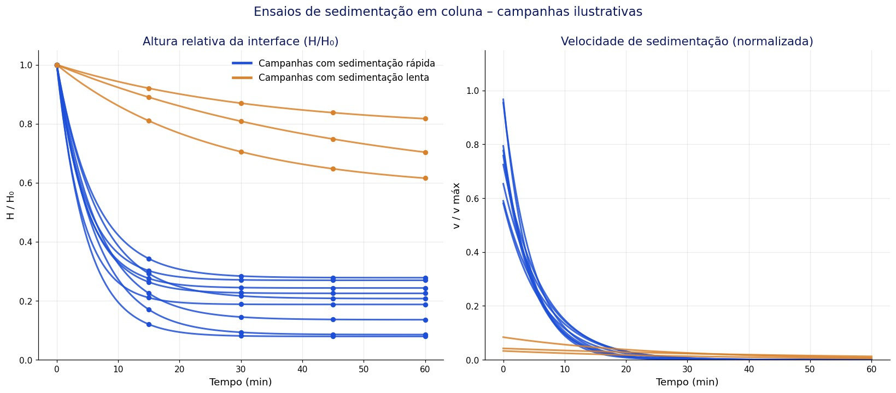
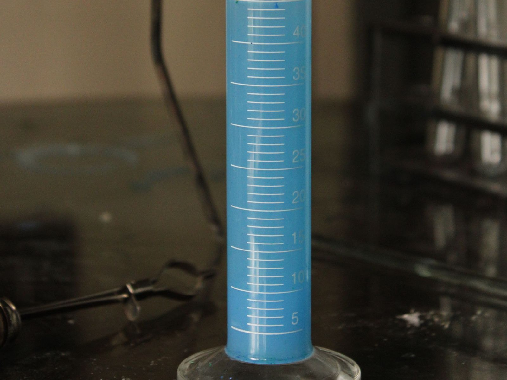
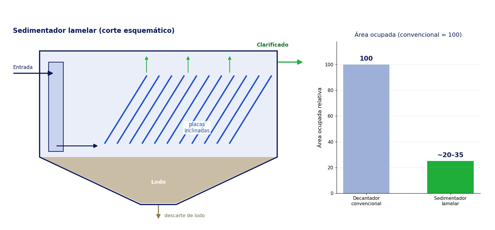
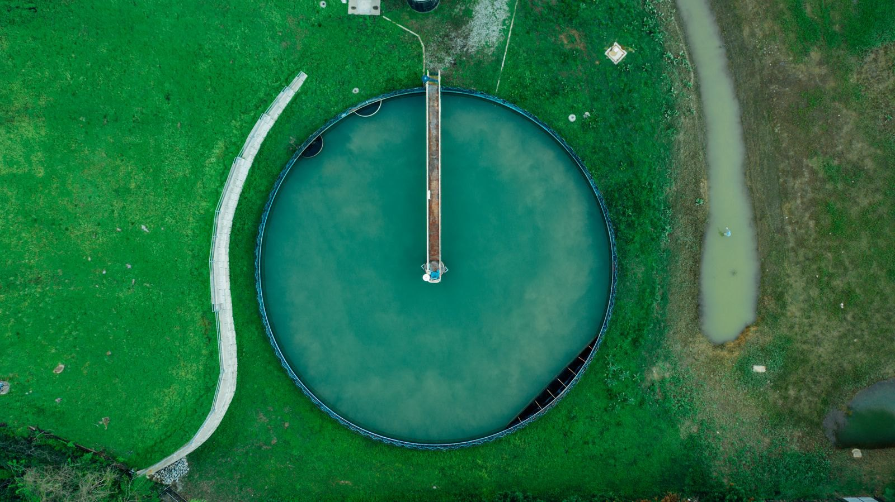
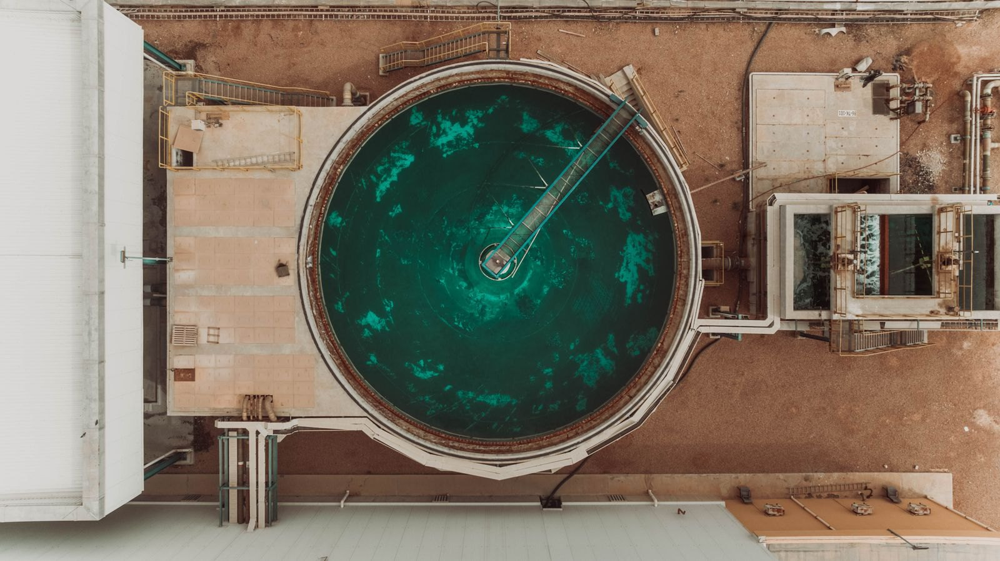

Problema / desafio do cliente
Em uma central de tratamento de efluentes no estado de São Paulo, uma das linhas recebe efluentes de alta carga orgânica e elevado teor de sólidos, vindos de fossas sépticas, caixas de gordura, banheiros químicos e outras fontes não perigosas.
O pré-tratamento existente (gradeamento e uma unidade compacta de remoção de sólidos) não retinha os sólidos finos, que sobrecarregavam as etapas seguintes do processo. Era necessário projetar um sistema de sedimentação eficiente, compatível com a vazão da linha e com o espaço disponível na planta.
Contexto e características do processo
- Efluente muito heterogêneo, com composição que muda conforme a origem de cada carga recebida.
- Vazão de recebimento elevada e variável de um dia para o outro, caracterizada a partir da série histórica de operação.
- Área disponível limitada para novas unidades dentro da planta.
- Necessidade de proteger as etapas seguintes do tratamento contra picos de sólidos.
Diagnóstico e dados analisados
Foram realizadas várias campanhas de ensaios de sedimentação em coluna ao longo de algumas semanas, medindo a altura da interface sólido-líquido ao longo do tempo e calculando a velocidade de sedimentação.
- Na maior parte das campanhas, o efluente sedimentou rapidamente nos primeiros minutos, com interface bem definida e lodo compacto.
- Em algumas campanhas, a sedimentação foi lenta, com sólidos mais dispersos, o que indica a necessidade de floculação prévia para garantir o desempenho em todas as condições.
- A velocidade de sedimentação é máxima no início do ensaio e cai rapidamente, um comportamento típico de sedimentação em zona.

Metodologia utilizada
- Análise estatística da vazão diária de recebimento (distribuição, boxplot e valores de referência para projeto).
- Ensaios de sedimentação em coluna em diferentes campanhas, com registro da altura da interface ao longo do tempo.
- Cálculo das velocidades de sedimentação e identificação das condições mais desfavoráveis.
- Definição da vazão de projeto e do tempo de retenção hidráulica com base nos ensaios.
- Dimensionamento de duas alternativas, sedimentador lamelar e decantador convencional, por volume, área e taxa de aplicação superficial (TAS).
- Recomendações construtivas e operacionais e apoio à elaboração da proposta técnica de implantação.

Solução de engenharia desenvolvida
A GETA recomendou um sedimentador lamelar, em que placas inclinadas multiplicam a área efetiva de sedimentação dentro de um volume compacto:
- Placas paralelas inclinadas, com espaçamento e inclinação dentro das faixas usuais de projeto, que aumentam a área efetiva de sedimentação em 4 a 8 vezes.
- Floculação prévia para agregar os sólidos finos e garantir o desempenho nas campanhas de sedimentação lenta.
- Câmara de entrada com difusores e defletores, para distribuir o fluxo e evitar curtos-circuitos.
- Funil de lodo com inclinação adequada e sistema de drenagem.
- Grade ou caixa de areia a montante, materiais resistentes à corrosão (aço inox ou revestimento epóxi) e acesso para limpeza das lamelas.
- Instrumentação de nível, vazão e ponto de amostragem.

Tecnologias e processos envolvidos
A sedimentação gravitacional separa os sólidos em suspensão pela diferença de densidade. Seu dimensionamento depende da taxa de aplicação superficial (TAS): quanto maior a área de sedimentação para a mesma vazão, mais partículas finas são retidas.
No sedimentador lamelar, as placas inclinadas criam várias superfícies de sedimentação sobrepostas: os sólidos deslizam pelas placas até o funil de lodo e o clarificado sai pela parte superior. Assim, obtém-se a mesma eficiência de um decantador convencional ocupando uma área muito menor.

Modelagem, simulação e ferramentas computacionais
- Análise de dados em Python: séries históricas de vazão, boxplots e curvas de sedimentação de todas as campanhas.
- Cálculo das velocidades de sedimentação a partir da variação da altura da interface ao longo do tempo.
- Dimensionamento hidráulico: volume pelo tempo de retenção, área pela profundidade útil e verificação da taxa de aplicação superficial com o fator lamelar.
- Comparação de alternativas por área ocupada, TAS e adequação a partículas finas.
Resultados obtidos
- O sedimentador lamelar foi a alternativa recomendada, com área ocupada 3 a 5 vezes menor que a de um decantador convencional para a mesma vazão.
- Taxa de aplicação superficial efetiva adequada para a retenção de partículas finas.
- Os ensaios mostraram que a floculação prévia é essencial para manter o desempenho nos dias de efluente mais disperso.
- As bases de cálculo foram encaminhadas à engenharia do cliente e serviram de base para uma proposta técnica de implantação elaborada com um fornecedor especializado.
CAPEX/OPEX e análise técnico-econômica
| Critério | Sedimentador lamelar | Decantador convencional |
|---|---|---|
| Área ocupada | 3 a 5 vezes menor | Referência |
| Obras civis | Menores (unidade compacta) | Maiores |
| Equipamentos | Inclui o módulo de placas | Mais simples |
| Manutenção | Limpeza periódica das lamelas | Remoção de lodo convencional |
| Eficiência com partículas finas | Maior | Menor |
Com espaço limitado e efluente com sólidos finos, a solução lamelar oferece o melhor equilíbrio entre investimento em obras civis, área ocupada e eficiência de remoção.
Escopo e responsabilidades da GETA
A GETA atuou na supervisão técnica do projeto, sendo responsável por:
- análise da vazão de recebimento e definição dos parâmetros de projeto;
- planejamento, execução e interpretação dos ensaios de sedimentação;
- bases de cálculo e dimensionamento das alternativas lamelar e convencional;
- recomendações construtivas e operacionais;
- apoio técnico à engenharia do cliente e ao fornecedor na proposta de implantação.
Principais entregáveis
- Relatório de bases de cálculo do sistema de sedimentação.
- Análise da vazão de recebimento e valores de referência para projeto.
- Curvas de sedimentação e de velocidade de todas as campanhas de ensaio.
- Dimensionamento do sedimentador lamelar e do decantador convencional.
- Recomendações construtivas, operacionais e de instrumentação.
- Apoio técnico à proposta de implantação com fornecedor especializado.
Galeria

Fotos ilustrativas de banco de imagens (Pexels) e esquemas simplificados, preservando a confidencialidade do cliente.